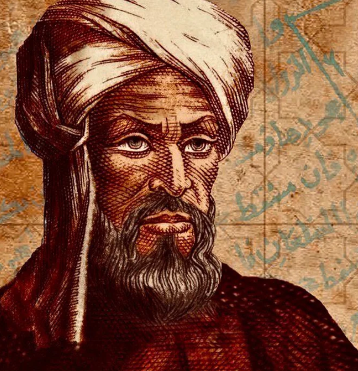
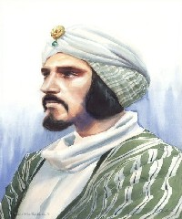

Some positive and motivational statements from historical scientists

Ibn al-Haytham
Knowledge and science:
Knowledge is the lifeblood of discovery, flowing through the veins of curiosity and fueled by the flame of inquiry.The path to understanding is not paved with certainty but with the stones of doubt and skepticism. Through observation and experimentation,
we uncover the hidden truths of the universe, peering into the depths of nature's mysteries. The scientific method, a beacon in the darkness of ignorance, guides our journey, illuminating the way forward with the light of reason. In the pursuit of knowledge, we stand on the shoulders of those who came before, building upon their discoveries to reach greater heights of understanding.
Let us embrace the quest for truth with humility and perseverance, for in the pursuit of knowledge lies the essence of enlightenment.

Ibn Sina
Medicine and Philosophy:
In the realm of knowledge, the physician is both seeker and healer, navigating the intricate web of the human body with skill and compassion. Through the lens of philosophy, we peer into the depths of existence, seeking the fundamental truths that govern our world. The pursuit of wisdom is a journey of the soul, a quest for enlightenment that transcends the boundaries of time and space. As we unravel the mysteries of the universe, let us not forget the guiding principles of compassion and empathy, for true healing arises from the union of knowledge and humanity. In the pursuit of wisdom, let us strive to illuminate the path for others, sharing our insights and discoveries with generosity and humility. For in the quest for knowledge lies the essence of our humanity, and in the pursuit of wisdom, we find the true fulfillment of our souls.

Al-Khwarizmi
Mathematics, Algebra, and the Beauty of Patterns:
In the realm of numbers, patterns emerge like constellations in the night sky, guiding the seeker of knowledge through the labyrinth of mathematics.Algebra, the language of equations, unlocks the secrets of the universe, revealing the hidden connections that bind the fabric of reality. Through the art of abstraction, we distill complexity into simplicity, finding beauty in the elegance of equations and the symmetry of solutions.
In the quest for understanding, let us embrace the power of algebra as a tool for discovery, a bridge between the tangible and the abstract. As we unravel the mysteries of mathematics, let us remember the words of Al-Khwarizmi, the father of algebra, who illuminated the path for generations of seekers with his wisdom and insight.
For in the world of numbers, the beauty of patterns awaits those who dare to explore its infinite depths.

Al-Biruni
Astronomy, Geography, and the Quest for Knowledge:
In the vast expanse of the cosmos, we find the tapestry of existence woven with threads of light and shadow, guiding the wanderer through the labyrinth of the heavens. Astronomy, the study of celestial bodies, unveils the mysteries of the universe, revealing the secrets of distant stars and galaxies. Geography, the science of space and place, maps the contours of the Earth, tracing the paths of rivers and mountains that shape our world. In the pursuit of knowledge, let us follow in the footsteps of Al-Biruni, the polymath scholar whose insatiable curiosity led him to explore the depths of the cosmos and the breadth of the Earth. As we gaze upon the wonders of the universe, let us marvel at the ingenuity of the human mind and the boundless potential of discovery. For in the quest for knowledge, we find the true essence of enlightenment, illuminating the path forward with the light of wisdom and understanding.
Omar Khayyam
Poetry, Mathematics, and the Beauty of Life:
In the garden of existence, we find the blooming roses of joy and the withering thorns of sorrow, entwined in the tapestry of life's fleeting moments. Poetry, the language of the soul, weaves verses of beauty and melancholy, capturing the essence of human experience in the rhythm of words. Mathematics, the language of patterns and precision, unravels the mysteries of the universe, revealing the harmonious dance of numbers and shapes that underlie reality. In the quest for meaning, let us heed the wisdom of Omar Khayyam, the poet-philosopher whose verses echo through the corridors of time, reminding us of the fragility and splendor of existence. As we journey through the sands of time, let us savor each moment like a sip of wine, cherishing the laughter and the tears, the triumphs and the tribulations that shape our lives. For in the embrace of life's fleeting beauty, we find solace and fulfillment, transcending the boundaries of time and space with the eternal melody of our souls.

Al-Kindi
Philosophy, Science, and the Quest for Truth:
In the realm of intellect, we embark on a journey of discovery, guided by the torchlight of reason and the compass of inquiry. Philosophy, the pursuit of wisdom, illuminates the path to understanding, unraveling the mysteries of existence with the precision of thought and the depth of reflection. Science, the quest for knowledge, unveils the secrets of the natural world, unlocking the treasures of nature's laws and phenomena. In the pursuit of truth, let us heed the words of Al-Kindi, the philosopher-scientist whose insights transcended the boundaries of time and culture, bridging the realms of thought and observation. As we navigate the seas of uncertainty, let us anchor our endeavors in the pursuit of truth, guided by the twin stars of reason and evidence. For in the quest for knowledge and wisdom, we find the true essence of enlightenment, enriching our lives with the boundless treasures of understanding and insight.
Ibn Rushd
Philosophy, Reason, and the Pursuit of Enlightenment:
In the corridors of thought, the echoes of reason reverberate, guiding the seeker through the labyrinth of existence with clarity and insight. Philosophy, the pursuit of truth, beckons the curious mind to unravel the mysteries of life and existence, navigating the complexities of the human condition with wisdom and discernment. Reason, the torchbearer of enlightenment, illuminates the path to understanding, dispelling the shadows of ignorance and superstition with the light of rational inquiry. In the quest for knowledge, let us heed the words of Ibn Rushd, the philosopher whose towering intellect illuminated the annals of human thought, transcending the boundaries of tradition and dogma. As we navigate the tumultuous currents of existence, let us anchor ourselves in the pursuit of truth and wisdom, guided by the beacon of reason and the compass of intellect. For in the embrace of enlightenment, we find solace and liberation, transcending the limitations of ignorance and embracing the boundless horizons of human potential.
Al-Biruni
Astronomy, Geography, and the Quest for Knowledge:
In the vast expanse of the cosmos, we find the tapestry of existence woven with threads of light and shadow, guiding the wanderer through the labyrinth of the heavens. Astronomy, the study of celestial bodies, unveils the mysteries of the universe, revealing the secrets of distant stars and galaxies. Geography, the science of space and place, maps the contours of the Earth, tracing the paths of rivers and mountains that shape our world. In the pursuit of knowledge, let us follow in the footsteps of Al-Biruni, the polymath scholar whose insatiable curiosity led him to explore the depths of the cosmos and the breadth of the Earth. As we gaze upon the wonders of the universe, let us marvel at the ingenuity of the human mind and the boundless potential of discovery. For in the quest for knowledge, we find the true essence of enlightenment, illuminating the path forward with the light of wisdom and understanding.Al-Khwarizmi
Mathematics, Algebra, and the Beauty of Patterns:
In the realm of numbers, patterns emerge like constellations in the night sky, guiding the seeker of knowledge through the labyrinth of mathematics.Algebra, the language of equations, unlocks the secrets of the universe, revealing the hidden connections that bind the fabric of reality. Through the art of abstraction, we distill complexity into simplicity, finding beauty in the elegance of equations and the symmetry of solutions.
In the quest for understanding, let us embrace the power of algebra as a tool for discovery, a bridge between the tangible and the abstract. As we unravel the mysteries of mathematics, let us remember the words of Al-Khwarizmi, the father of algebra, who illuminated the path for generations of seekers with his wisdom and insight.
For in the world of numbers, the beauty of patterns awaits those who dare to explore its infinite depths.
Al-Biruni
Astronomy, Geography, and the Quest for Knowledge:
In the vast expanse of the cosmos, we find the tapestry of existence woven with threads of light and shadow, guiding the wanderer through the labyrinth of the heavens. Astronomy, the study of celestial bodies, unveils the mysteries of the universe, revealing the secrets of distant stars and galaxies. Geography, the science of space and place, maps the contours of the Earth, tracing the paths of rivers and mountains that shape our world. In the pursuit of knowledge, let us follow in the footsteps of Al-Biruni, the polymath scholar whose insatiable curiosity led him to explore the depths of the cosmos and the breadth of the Earth. As we gaze upon the wonders of the universe, let us marvel at the ingenuity of the human mind and the boundless potential of discovery. For in the quest for knowledge, we find the true essence of enlightenment, illuminating the path forward with the light of wisdom and understanding.